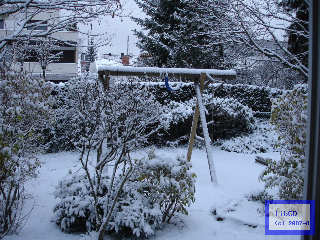

示例 #1 使用 imagecopymerge() 函数创建半透明水印
<?php
// 加载要加水印的图像
$im = imagecreatefromjpeg('photo.jpeg');
// 首先我们从 GD 手动创建水印图像
$stamp = imagecreatetruecolor(100, 70);
imagefilledrectangle($stamp, 0, 0, 99, 69, 0x0000FF);
imagefilledrectangle($stamp, 9, 9, 90, 60, 0xFFFFFF);
imagestring($stamp, 5, 20, 20, 'libGD', 0x0000FF);
imagestring($stamp, 3, 20, 40, '(c) 2007-9', 0x0000FF);
// 设置水印图像的位置和大小
$marge_right = 10;
$marge_bottom = 10;
$sx = imagesx($stamp);
$sy = imagesy($stamp);
// 以 50% 的透明度合并水印和图像
imagecopymerge($im, $stamp, imagesx($im) - $sx - $marge_right, imagesy($im) - $sy - $marge_bottom, 0, 0, imagesx($stamp), imagesy($stamp), 50);
// 将图像保存到文件，并释放内存
imagepng($im, 'photo_stamp.png');
imagedestroy($im);
?>
